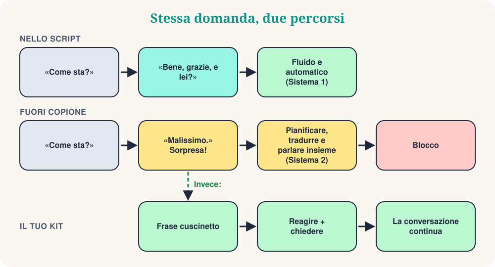

Nel mio club di conversazione Mind Matters esploriamo la psicologia dell'apprendimento delle lingue. Di recente siamo partiti da un breve video che ci ha fatto ridere e poi riflettere. Si intitola «Quando il paziente esce dal copione». Un dipendente dice il saluto di rito: «Come sta?» Il paziente risponde con calma: «Malissimo.» E il dipendente va in corto circuito: balbetta, sbaglia le parole, guarda nervosamente intorno.
Se impari una lingua, conosci questo momento. Qualcuno ti fa una domanda di routine, tu dai la risposta di routine, e all'improvviso l'altro dice qualcosa che non avevi preparato. Mente vuota. Questo blocco è un fenomeno reale? La psicologia ha una spiegazione utile: la teoria degli script.
Parte 1: Che cos'è uno script?
Negli anni Settanta gli scienziati cognitivi Roger Schank e Robert Abelson proposero che conserviamo la conoscenza delle situazioni quotidiane sotto forma di script: sequenze tipiche di eventi, ruoli e aspettative. Il loro esempio classico è il ristorante:
- Entri e aspetti che ti facciano accomodare.
- Leggi il menu e ordini.
- Mangi.
- Chiedi il conto e paghi.
- Esci.
Nessuno ti insegna questo elenco, e nessuno lo dimentica. Non ordini il dolce prima del secondo e non ti chiedi chi paga. Gli script fanno risparmiare energia mentale: la sequenza è prevedibile, quindi puoi agire quasi in automatico.
Qui aiuta la distinzione resa popolare da Daniel Kahneman (è una semplificazione, ma utile). Il comportamento da script è soprattutto rapido e automatico: il Sistema 1. Le situazioni nuove richiedono il Sistema 2, lento e deliberato. In una lingua straniera il Sistema 2 lavora già tanto solo per trovare le parole. Per questo le frasi memorizzate sono un terreno solido: «Come stai?» «Bene, grazie, e tu?» non costa quasi nulla.
Parte 2: Che cosa succede quando lo script si rompe?

La conversazione è un'attività congiunta. Gli psicologi Martin Pickering e Simon Garrod descrivono il dialogo come allineamento interattivo: mentre parliamo ci allineiamo inconsciamente l'uno all'altro, nelle parole scelte, nelle strutture usate e nel significato che supponiamo. Uno script lo rende facile, perché entrambi sanno cosa viene dopo.
Quando l'interlocutore dice «Malissimo», la previsione fallisce. Ora devi capire un messaggio inatteso, decidere come reagire, trovare le parole e dirle, tutto insieme, in una lingua non ancora automatica. Aggiungi la pressione di essere osservati, e la memoria di lavoro va in sovraccarico. Blocco, balbettio e «corto circuito da robot» sono semplicemente l'aspetto esterno del sovraccarico.
Due cose da ricordare. Primo: il blocco non dimostra che sei scarso nella lingua. Anche i madrelingua si bloccano quando la conversazione va in una direzione inattesa; hanno solo più materiale automatico a cui appoggiarsi. Secondo: il problema è spesso il tempo. Conosci molte parole. Ti mancano i secondi.
Parte 3: Fuori dal copione si impara
Anch'io avevo questa paura. Come insegnante e come studente amavo i dialoghi ben preparati. Dopo anni con studenti di inglese, francese, italiano, russo, greco e altre lingue, ho cambiato idea. Un dialogo memorizzato è una prova. Uno scambio inatteso è vera comunicazione.
Il sociologo Erving Goffman ha mostrato che l'interazione quotidiana non è seguire un testo. Le persone gestiscono continuamente la situazione: interpretano ciò che fa l'altro, si adattano, riparano piccoli imbarazzi e si aiutano a «salvare la faccia». Improvvisare è una normale capacità umana, non un segno di fallimento. Quando inciampi fuori copione, eserciti proprio questa capacità in una lingua nuova.
Il tuo kit per uscire dal copione
Consiglio 1: Guadagna tempo con le frasi cuscinetto
Quando arriva la domanda inattesa, non rispondere subito. Di' prima una breve frase automatica. Dà al cervello due o tre secondi e suona naturale, perché i madrelingua le usano continuamente.
| Lingua | Inizia con… | Poi aggiungi… |
|---|---|---|
| inglese | That's a good question… | Let me think for a second… |
| francese | C'est une bonne question… | Voyons voir… laissez-moi réfléchir. |
| italiano | Bella domanda… | Allora… vediamo… dammi un attimo. |
| spagnolo | Buena pregunta… | A ver… déjame pensar. |
| russo | Хороший вопрос… | Так… дайте подумать. |
| greco | Καλή ερώτηση… | Για να δω… να το σκεφτώ λίγο. |
Scegli una frase per lingua e rendila la tua abitudine. Dilla ad alta voce dieci volte, finché non richiede più pensiero.
Consiglio 2: Punta alla comunicazione, non alla perfezione
L'ansia da copione nasce spesso dal perfezionismo: la convinzione nascosta che ogni frase debba suonare come un manuale. Quando qualcuno esce dal copione, il perfezionista che hai dentro va in panico perché il dialogo provato è rovinato. Cambia obiettivo. La lingua non è una recita, è un legame. Usa parole più semplici, gesti o la perifrasi: spiegare una parola che non conosci descrivendola. Lo scopo è capirsi, non vincere un premio di grammatica.
Consiglio 3: Impara script flessibili, non rigidi
Se memorizzi un intero dialogo parola per parola, crolli quando l'altro non lo segue. Impara invece dei mattoncini. Un mattoncino molto utile è la scala in tre passi: reagire, chiedere, proporre. Funziona per quasi ogni sorpresa.
| Lingua | 1. Reagire | 2. Chiedere | 3. Proporre |
|---|---|---|---|
| inglese | Oh no… | What happened? | Do you want to talk about it? |
| francese | Oh non… | Qu'est-ce qui s'est passé ? | Vous voulez en parler ? |
| italiano | Oh no… | Che cosa è successo? | Vuoi parlarne? |
| spagnolo | Vaya… | ¿Qué ha pasado? | ¿Quieres hablar de ello? |
| russo | Ой, нет… | Что случилось? | Хотите поговорить об этом? |
| greco | Ωχ, όχι… | Τι συνέβη; | Θέλετε να το συζητήσουμε; |
La stessa idea vale per i compiti quotidiani. Invece di imparare un dialogo per comprare un caffè, impara frasi con uno spazio da cambiare:
Cambia lo spazio: un caffè, un tè, un panino.
Context: Ordinare
Il tuo perno per ogni sorpresa. La conversazione diventa un ramo, non un muro.
Context: Quando la risposta è «no»
Consiglio 4: Ridefinisci l'«errore»
Quando inciampi, il cervello lo legge come una minaccia. Prova a riformulare la scarica di adrenalina. Invece di «ho sbagliato tutto, sembro stupido», dì a te stesso la frase qui sotto. Il linguista Stephen Krashen chiamava l'ansia «filtro affettivo», che blocca l'apprendimento. L'ipotesi è discussa, ma la maggior parte degli insegnanti riconosce l'effetto: chi è rilassato parla di più, e parlare di più è come si migliora.
Dillo mentalmente, poi usa la tua frase cuscinetto.
Context: Voce interiore
Quiz veloce
❓ Il paziente dice «Malissimo». Ti blocchi. Secondo la teoria degli script, perché?
Uno script prevede cosa viene dopo. Quando la previsione fallisce, devi passare dall'elaborazione automatica a quella faticosa, e questo ti sovraccarica.
❓ Qual è la migliore prima mossa dopo una domanda inattesa?
Una frase cuscinetto è automatica, quindi non costa nulla, e dà al cervello i secondi di cui ha bisogno.
❓ Quale strategia ti rende più flessibile nelle conversazioni?
I mattoncini si ricombinano. Un dialogo fisso funziona solo se l'altro lo segue.
Il tuo allenamento di 10 minuti
- Scegli la tua frase cuscinetto dalla tabella e dilla ad alta voce dieci volte.
- Fai a un amico (o a un registratore) cinque domande di routine: «Come stai?», «Che cosa hai fatto oggi?»…
- L'amico risponde a ognuna con una risposta inattesa: «Malissimo», «Ho perso le chiavi», «Mi trasferisco in Norvegia».
- Tu rispondi con il kit: frase cuscinetto, reagire, chiedere.
- Scambiatevi i ruoli. Poi registra il secondo giro e ascolta la differenza.
Conclusione
La prossima volta che ti blocchi, non chiamarlo fallimento. È un invito a uscire dal modello automatico e a incontrare la persona vera che hai davanti. Di' la tua frase cuscinetto, reagisci, chiedi, e tieni viva la conversazione.
“Il momento in cui lo script finisce è il momento in cui la conversazione comincia.”
Fonti e letture consigliate
- Schank, R. & Abelson, R. (1977). Scripts, Plans, Goals and Understanding.
- Pickering, M. & Garrod, S. (2004). Toward a mechanistic psychology of dialogue. Behavioral and Brain Sciences, 27.
- Goffman, E. (1959). The Presentation of Self in Everyday Life.
- Kahneman, D. (2011). Thinking, Fast and Slow.
- Krashen, S. (1982). Principles and Practice in Second Language Acquisition.